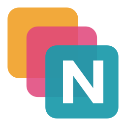
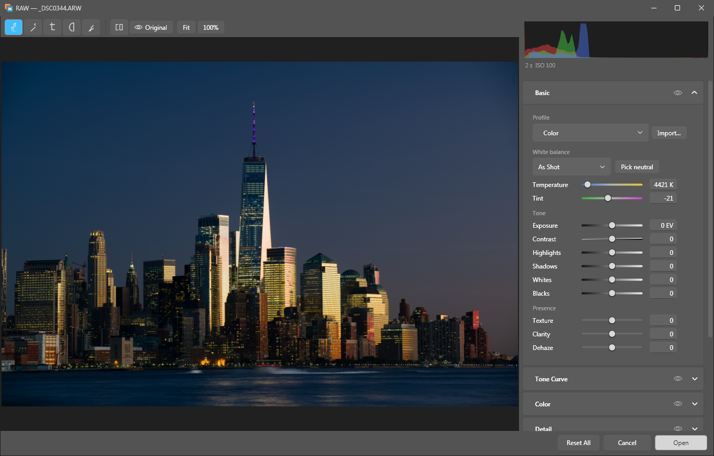
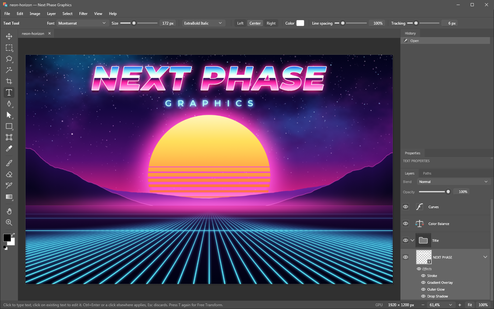
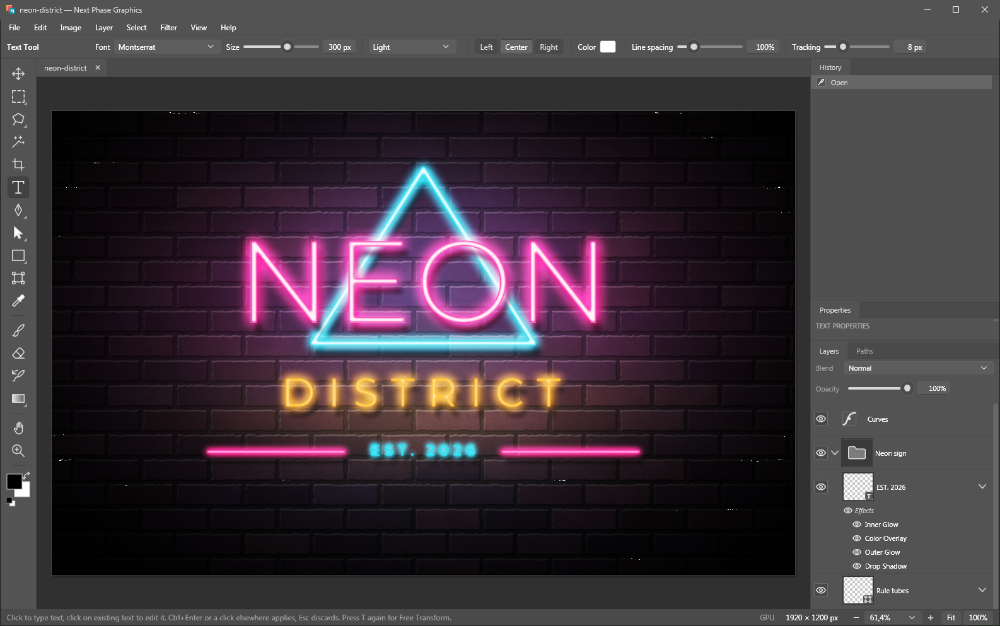
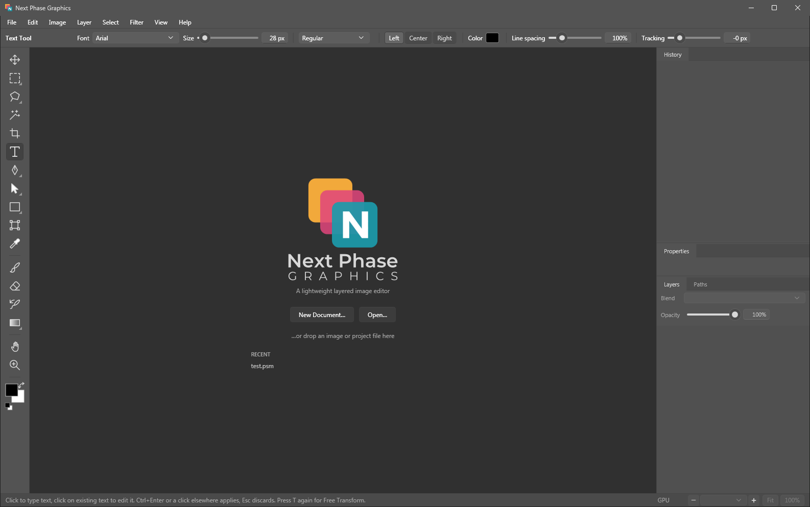
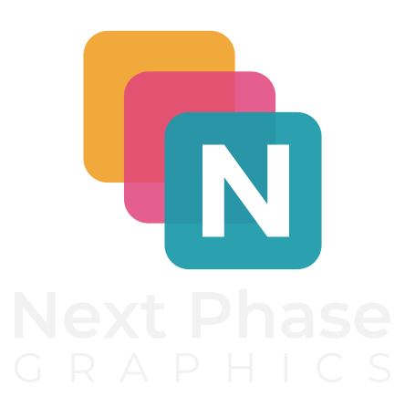

Layers that behave
Opacity, 26 blend modes, nested groups, layer masks, clipping masks, merge and flatten. Drag to reorder, Ctrl+click to select pixels.

Next Phase GraphicsWindows image editor · v1.0.0
Next Phase Graphics is a layer-based graphics editor for Windows, with camera RAW input and adjustment layers. Use it to develop and retouch photos, color-grade and combine images, paint, draw vector shapes and illustrations, set and style text, and design posters, banners, social media graphics, logos and web art.
84 MB zip · Windows 10 / 11 x64 · no installer, no .NET runtime needed
What's inside
Compositing, retouching, RAW development and web graphics cover most real editing work, so that's where the effort went.
Opacity, 26 blend modes, nested groups, layer masks, clipping masks, merge and flatten. Drag to reorder, Ctrl+click to select pixels.
Curves, Levels, Hue/Saturation with six color ranges, and Color Balance as adjustment layers. You can mask, hide or change them later, and the pixels underneath stay untouched.
Develop raw files from most digital cameras: white balance, tone, curves, HSL, local contrast, haze removal, masks and lens corrections. The result stays a RAW layer you can re-develop at any time.
Drop Shadow, Bevel & Emboss, Stroke, Inner and Outer Glow, Satin, Overlays and blend ranges. They stay editable, and PSD files bring them in with each layer.
Shape layers, a full Pen tool, path selection, boolean path operations, vector masks and Free Transform on curves. Shapes stay sharp at any resize.
Text layers with any installed font, size, weight, alignment, tracking and line spacing. Double-click a text layer to edit it again.
The graphics card draws the screen and the RAW previews, so big documents stay responsive. The CPU renders every export, and the file comes out identical with or without a graphics card.
Undo stores only what changed, so a brush stroke costs kilobytes instead of a full image copy, and the History panel jumps back to any earlier step.
A .psm project keeps every layer, mask, style and RAW setting. It's a plain ZIP of JSON and 16-bit PNGs; rename it to .zip and you can pull out any layer by hand.
RAW developer
Open a raw file and a full developer comes up. Confirm it, and the photo lands in your document as a RAW layer that keeps the original file and every setting, so a double-click takes you back to the sliders.

Drag a linear gradient's start and end to any position and angle on the frame, or set a radial gradient's centre, both radii and its rotation, then soften the edge with feather. Gradients and brush strokes combine with add, subtract and intersect; each mask can be inverted, faded with density and given its own exposure, contrast, highlights, shadows, whites, blacks, temperature, tint, saturation, texture, local contrast, haze removal and sharpness.
Exposure, contrast, highlights, shadows, whites and blacks, plus a parametric curve with movable split points and point curves for RGB and each channel.
As shot, auto, temperature and tint, or a neutral picker. Vibrance, saturation and a hue, saturation and luminance mixer over eight colour bands.
Seven built-in looks from Color to Monochrome work with any camera. You can import your own camera colour profiles, and creative looks get a strength slider from 0 to 200 %.
Sharpening with amount, radius, detail and edge masking. Luminance and colour noise reduction are separate, and the colour side measures the noise at every scale, so blotches go without smearing texture.
Automatic colour-fringe alignment, manual distortion and vignetting with a midpoint, purple and green defringe with their own hue ranges, and clipped highlights rebuilt from the surrounding glow.
Crop with aspect presets, straighten, quarter turns and flips. None of it touches the raw data.
Open a batch and a filmstrip appears. Every slider you move applies to all selected frames, each keeping its own other settings, and Sync Settings copies the whole look across.
The pipeline runs in floating point in a wide-gamut space and hands over 16 bits per channel in sRGB, Display P3, Rec. 2020, ProPhoto or your own ICC profile.
The RAW layer embeds the original file or links to it; a linked file that moved together with the project is found again, and relinking checks the file's fingerprint before it accepts a replacement. Masks stay shapes and strokes too, so they're redrawn at full resolution on every render.
Tour



Formats
Also: copy and paste with other apps, drag & drop onto the window or the exe, and a New Document preset sized to the image on the clipboard.

The whole program is one self-contained executable, so you can copy the folder to another PC or a USB stick and run it there without installing anything.
NextPhaseGraphics.exeThe zip also holds the two example projects from the tour; open one and pick apart every layer and effect.
Download v1.0.0NextPhaseGraphics-1.0.0-win-x64.zip · 84 MB · built 2026-10-16
%AppData%\NextPhaseGraphics. To uninstall, delete the program folder and that one.